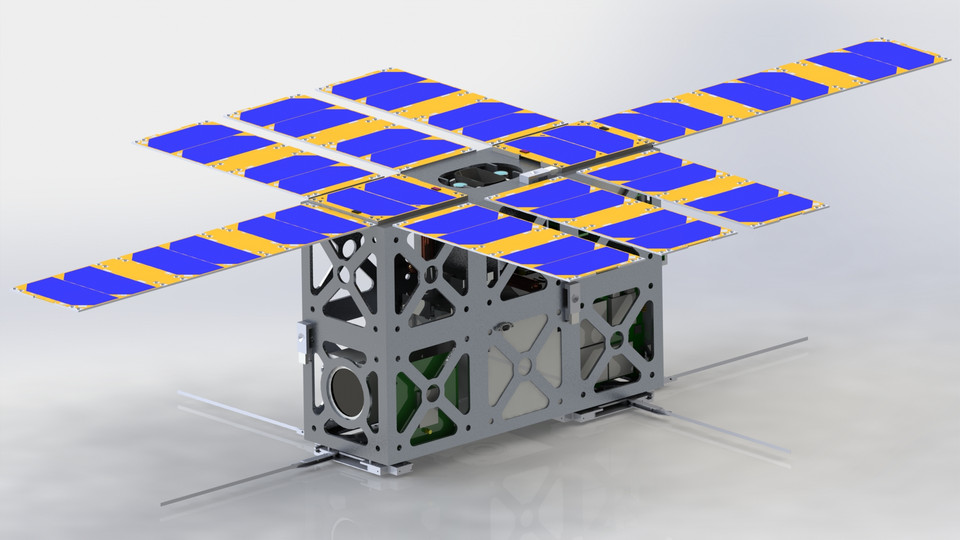

← All Projects
UMass CubeSat Lab — 6U BMS & Power System
Space · Power SystemsDesigned a complete power system for a 6U CubeSat, covering everything from battery chemistry selection to PCB layout and solar panel manufacturing.
The battery management system (BMS) handles cell balancing, over-current protection, and state-of-charge estimation for the spacecraft's primary energy storage. The design had to meet strict mass and volume constraints while surviving the thermal cycling of low Earth orbit.
Solar panels were manufactured and integrated into the design, and the power system was architected to distribute regulated voltages to all onboard subsystems. This was a full-stack power electronics project from chemistry to flight hardware.